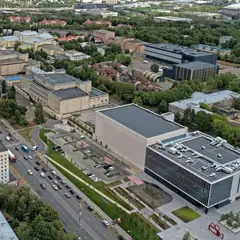

У метро · ЗАО
Куда сходить у метро «Парк Победы»
Для 8 мест из нашего каталога ближайшая станция — «Парк Победы» (ЗАО): 2 развлечения, 2 музея, 1 культурное место и 1 ресторан или кафе. Например, «Парк Победы», «Бородинская панорама» и «Мосфильм». Недорогих, примерно до 1 500 ₽ на человека, — 1. 6 готовых планов проходят через эту станцию — например, «Бородино и морепродукты», с маршрутом пешком между точками.
- 8 мест
- 6 планов
Места у метро «Парк Победы» 7
пл. Победы, Поклонная гора
Мемориальный парк на Поклонной горе: монумент, фонтаны, выставка военной техники.
Подробнее и маршрут: Парк ПобедыПозвать сюда: Парк Победы
Фото: Jrissman, CC BY 3.0 · Wikimedia Commons
Кутузовский просп., 38, стр. 1
Круговое полотно Рубо о Бородинском сражении на Кутузовском. Пятница — выходной.
Подробнее и маршрут: Бородинская панорамаПозвать сюда: Бородинская панорама
Фото: Alex 'Florstein' Fedorov, CC BY-SA 4.0 · Wikimedia Commons

Мосфильмовская ул., 1
Экскурсии по киностудии: декорации старой Москвы, костюмы и коллекция ретроавтомобилей.
Подробнее и маршрут: МосфильмПозвать сюда: Мосфильм
Фото: stroi.mos.ru, CC BY 4.0 · Wikimedia Commons
пл. Победы, 3
Большой музей Великой Отечественной войны на Поклонной горе.
Подробнее и маршрут: Музей ПобедыПозвать сюда: Музей Победы
Фото: Jrissman, CC BY 3.0 · Wikimedia Commons
Кутузовский пр., 36А
Устрицы, рыба и морепродукты по разумным ценам, каждый день — позиция по себестоимости.
Подробнее и маршрут: Atlantica SeafoodПозвать сюда: Atlantica Seafood
Кутузовский просп., 36, стр. 4
Новое
Бильярдная на Кутузовском: 22 русских стола, пул и снукер, крафтовое пиво и кухня, музыка 80–90-х. Стол — 800–1 300 ₽/ч. С 7 утра до 3 ночи.
Подробнее и маршрут: Кутузовский бильярдный клубПозвать сюда: Кутузовский бильярдный клуб
2-й Сетуньский пр., 1
Новое
Иммерсивный перформанс в «волшебном театре»: маски, костюмы, актёры играют с полной отдачей, а загадки вплетены прямо в сюжет. Лучше компанией.
Подробнее и маршрут: П.И.Р. Театр ЗолтанаПозвать сюда: П.И.Р. Театр Золтана


Готовые планы 6
- Бородинская панорама · Музей · м. Парк Победы
- 2 минуты пешкомAtlantica Seafood · Рыбный ресторан
Сначала круговое полотно Рубо о Бородинском сражении, а потом устрицы и рыба в Atlantica в двух минутах пешком. Учтите: по пятницам панорама закрыта.
Открыть план: Бородино и морепродуктыПозвать сюда: Бородино и морепродукты
Фото: Alex 'Florstein' Fedorov, CC BY-SA 4.0 · Wikimedia Commons
- Парк Победы · Парк · м. Парк Победы
- 5 минут пешкомColizeum Парк Победы · Компьютерный клуб
Прогулка по Парку Победы к монументу и выставке военной техники на закате, а через пять минут VIP-буткемп ровно на пятерых и три PS5.
Открыть план: Поклонка на закате и буткемпПозвать сюда: Поклонка на закате и буткемп
Фото: Jrissman, CC BY 3.0 · Wikimedia Commons
- Парк Победы · Парк · м. Парк Победы
- 14 минут пешкомМузей Победы · Музей
Парк Победы, выставка техники под открытым небом и большой музей войны.
Открыть план: Поклонная гораПозвать сюда: Поклонная гора
Фото: Jrissman, CC BY 3.0 · Wikimedia Commons
- Atlantica Seafood · Рыбный ресторан · м. Парк Победы
- 3 минуты пешкомКутузовский бильярдный клуб · Бильярдный клуб
Устрицы и рыба по разумным ценам в Atlantica Seafood, а в соседнем доме — 22 русских стола, пул и снукер под музыку 80–90-х, открыто до 3 ночи.
Открыть план: Устрицы и бильярд до 3 ночиПозвать сюда: Устрицы и бильярд до 3 ночи
- Мосфильм · Киностудия · м. Парк Победы
Декорации старой Москвы и коллекция ретроавтомобилей киностудии.
Открыть план: Экскурсия по «Мосфильму»Позвать сюда: Экскурсия по «Мосфильму»
Фото: stroi.mos.ru, CC BY 4.0 · Wikimedia Commons
- Colizeum Парк Победы · Компьютерный клуб · м. Парк Победы
- 10 минут пешкомAtlantica Seafood · Рыбный ресторан
VIP-буткемп на пятерых и три PS5: своя комната без свидетелей, а потом устрицы, рыба и морепродукты в Atlantica в десяти минутах.
Открыть план: Девчачий буткемпПозвать сюда: Девчачий буткемп
Компьютерные клубы 1
ул. Генерала Ермолова, 4
Круглосуточно
Три PS5 и VIP-буткемп на пятерых — как раз на пачку. Круглосуточно.
Подробнее и маршрут: Colizeum Парк ПобедыПозвать сюда: Colizeum Парк Победы
Как позвать
- Выбери план, место или событие — в карточке адрес, цены и маршрут в Яндекс Картах.
- Нажми «Позвать сюда» — соберётся приглашение-игра для свидания или голосование для компании.
- Отправь ссылку в любой мессенджер: тебе ответят, а компания отметит, куда и когда может. Бесплатно и без регистрации.